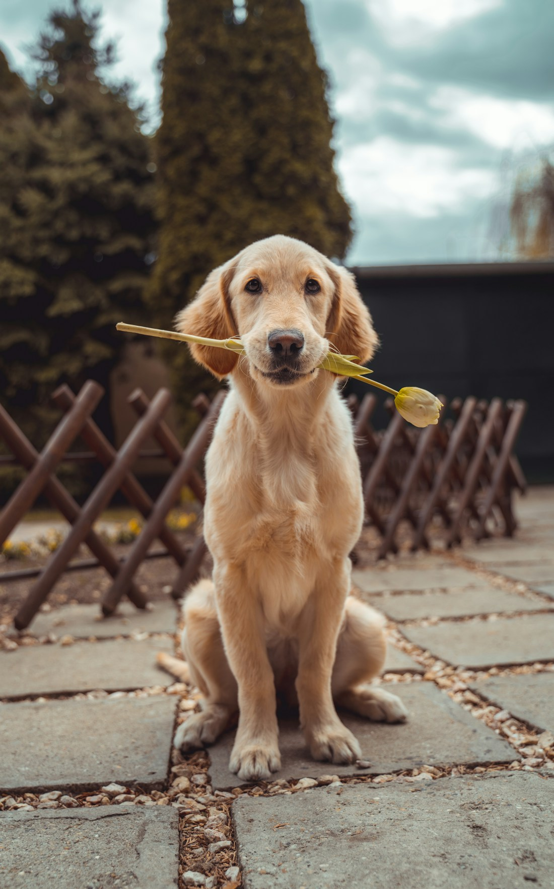

Bath
A bath with finishing care.
- Shampoo and fluff dry
- Nail trimming and grinding
- Ear cleaning
Baths, complete grooms, and the finishing touches. Explore Shear Canine’s published services, then call the Brentwood salon for a quote.
Brentwood, California · (925) 306-0733

The salon lists two main grooming options. Pricing is provided by phone.
A bath with finishing care.
Bathing and a full-body haircut.
Call the salon to discuss the service and price for your pet.
Please contact the salon for current services, prices and appointment availability.
 Illustrative photograph
Illustrative photographShear Canine’s current website includes services, a gallery, and contact details. This concept brings the bath and complete-groom options together with a clear way to call the salon for a quote.
Get in touchThe salon asks customers to call for pricing. Get in touch to discuss your pet’s needs and appointment options.
This is a design preview. Phone, email and external booking links lead to the business’s published contact channels.
Created by Bleenky for Shear Canine to review. This is not a commissioned or approved business website and does not imply an endorsement. Design, text treatment and photography are illustrative; the business must approve the final site.
Services are summarized from the published service page. Prices, durations and availability are not invented; ask the salon for current details.
Content adapted from the business’s published website, checked November 20, 2026. No testimonials or unverified prices have been added. This page does not collect appointment requests or payments.